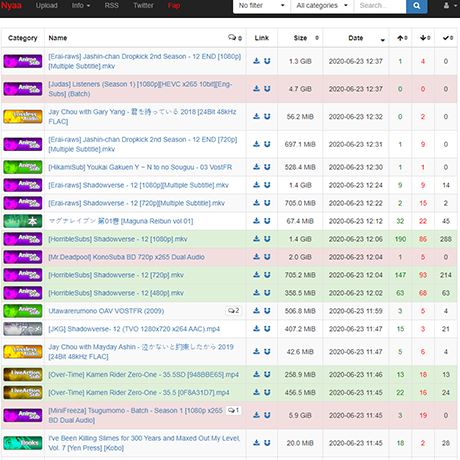

Shana Project
Shana Project is a torrent-tracker site that indexes quality anime-content from across the web. It provides you the flexibility to customize your own RSS feed and get details related to your favorite free indie shows automatically. It has all the popular free indie anime shows available in various languages along with subtitles. Due to the well-designed interface, finding free indie content is super simple. You can browse through various menus, and even use the search bar to pick a title. Another fascinating feature of Shana is that it automates the torrent downloading process thereby enabling you to download the free indie content automatically without any manual input.
Content
Shana Project
- Rating: N/A
- Year Founded: 2008
- Monthly Visitors: N/A
- Download Speed: N/A
History
Shana Project began its journey on 22nd January 2008 which makes it one of the oldest free indie anime-related torrent sites. However, in recent years, the project has stalled since all the social media handles are inactive. You no longer find the latest free indie content on the website and even the twitter feed was last updated in 2017. Nonetheless, you’d find all the popular free indie anime series and movies that were released a couple of years ago.
Content
Content Categorization – Shana’s content categorization efforts can be seen through various menus. Each show and season is bifurcated based on the tags. For instance, if you click on “newest first’’, you’ll be able to access all the free indie content that has been uploaded recently.
Integrated Community – Most of the torrent websites refrain from joining any social media platforms in a bid to avoid any repercussions. That’s the reason why you’d just find a private forum or a discord server. However, with Shana, you can connect with the community in more than one way. There’s a twitter handle that you can follow to stay up-to-date with what’s happening in the community. Other than the social presence, there’s a ‘Help’, and ‘Blog’ section where you’ll find members of the community engaging with each other.
Optional Registration – It’s easy to trust a torrent site when it doesn’t force you to sign up. Shana, similar to many open-ended websites, allows you to download the free indie content without registering. You can access all the content as a guest and not worry about any hindrances. Other than registration itself, most of the free indie content on the platform comes with subtitles, and thus it caters to a wide range of audiences.
Design
While most anime torrenting sites couldn’t care less about aesthetics, Shana doesn’t shy away from it. It provides users with an intuitive design which makes it easier to find content. It spends a great amount of time and effort in organizing high-quality videos that the end-users can access without any hassle. The moment you land on the website, you’ll find a static banner along with the trending content in the hero section. You can find free indie content using the search bar, different menus, and even through alphabetical sorting.
Header – The header section has a sleek design with a black background and white text. In this section, you’ll find five main menus – ‘Home’, ‘Search’, ‘Season’, ‘Help’, and ‘Blog’. Whenever I want to search for something unique, I use the ‘search’ option which allows me to search for any title by adding the name and the subber.
Hero Section – The hero section has a couple of static banners with their respective CTAs. The banner on the left invites you to join ‘Kitsu.io’, whereas the banner on the right features the most trending content of the week.
Inner Pages – Once you click on any title, you’ll be directed towards the homepage, where you’ll find information such as ‘FileName’, ‘Subber’, ‘File Size’, and the ‘Download’ button.